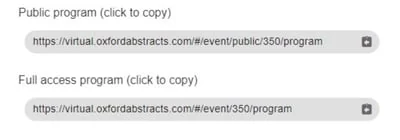

Public vs full-access programme
If you have the Professional Conference package, you will have a feature that allows you to control access to the premium features of the platform.#
The guidance below is for event administrators/ organisers. If you are an end user (eg. submitter, reviewer, delegate etc), please click here.
If you have set who can see your full access program, it is useful to know what those who have full access will be able to view, and those who don't have access - ie the public version of the program.
If you have selected anything other than Open access, when you go to publish your program, you will have two links (below).

Full access uers will be able view both versions. Those who don't will be able to see the public program, and if they click on the full access program, will be directed to the public version.
The table below contains the features availablein each version of the program.
| Feature | Public program | Full access program |
| Abstract title, authors and affiliations | Yes | Yes |
| Abstract content including posters and presentations | No | Yes |
| Live and on-demand content | No | Yes |
| Poster gallery | No | Yes |
| Chat feature | No | Yes |
| Networking - eg viewing and creation of name badges | No | Yes |
| View comments on sessions | Yes | Yes |
| Create new comments and respond to existing ones | No | Yes |
| Chat feature - view messages in group, event and private | No | Yes |
| Chat feature - create and respond to group, event and private messages | No | Yes |
| View sponsors | Yes | Yes |
| Set timezone | Yes | Yes |
| View event-wide extra content (ie. information / welcome messages etc) | Admin controls | Yes |
Common questions#
I am unsure what can be viewed in the public and private (full access) version of the program?#
See What is the difference between the public and full access program?
Did this page solve it?
Thanks — this helps us fix it.
Didn't solve it? Ask our support team
No question is too small, and there's no charge for asking. Raise a ticket and someone who knows the software will pick it up.